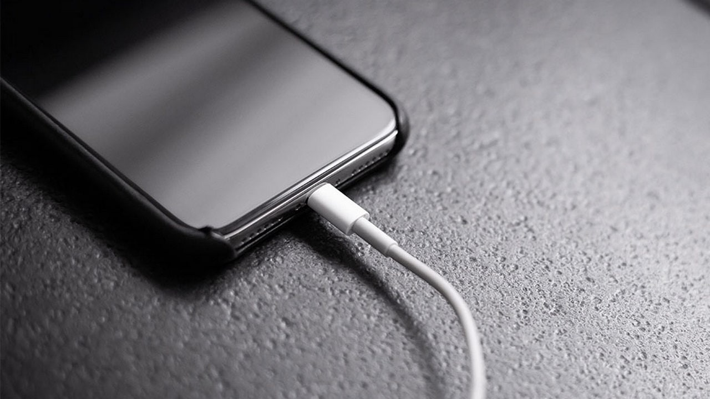
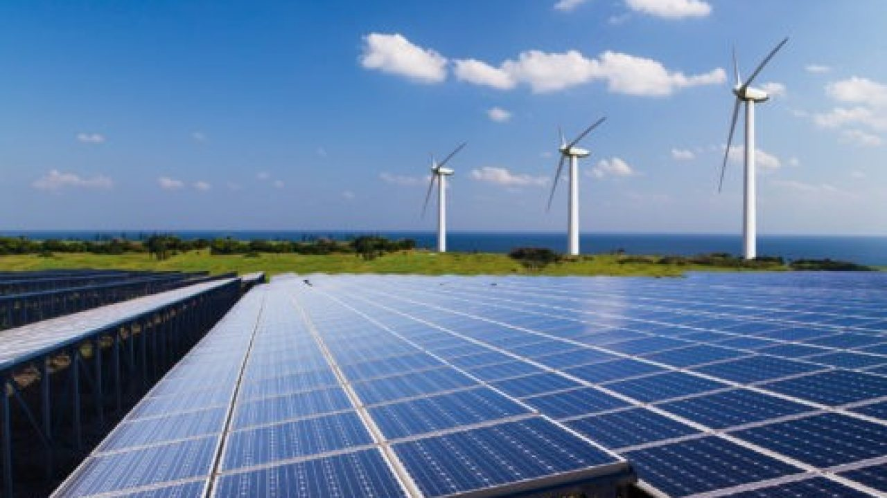

Energy Storage Comes In many Sizes
-

Convinience
A battery in a phone can hold lots of energy! Without batteries our our lives would be vastly different. Imagine if you could not make it to your zoom class simply because batteries didn't exist!
-
Daily Uses
Buildings heat up water in a water heater to keep it hot for when needed. Many people take hot water for granted Without it we would only have cold water for washing our hands yikes!
-

Clean Energy
Renewables are in demand but aren't dependable due to changing enviernments. Storing energy can fix that. When combined with energy renewables, energy storage systems can boost the availabily of energy and boost efficiency.
History of Energy Storage
Since the dawn of civilizaiton
Energy storage has been around for as long as we know. People would store water underground to keep it at constant temperature. The modern electirc battery was also a mistake. It was claimed to produce energy forever at super low voltages of course. Captering energy and storing it has also been very closely tied when researching renewable resources. Energy storeage has evolved over the years to capture mlre energy in the smallest area possible. The transporatation of energy is also vital now for current technologies as electric cars are pushing the limits on distance. Damns for example store enegy by preventing water from slowing. This is also a type of storage. Energy is all around us, without storage however our lives would obviously different.
Energy Storage and their types
-
Mechanical Energy
Mechanical Energy is stored as kenitic energy in a contraption. Most common and most efficient types of mechanical storage is a flywheel. Flywheels store energy in a cylindrical large mass that spins at high speeds. Flywheels have the advantage of quick charge and discharge of energy.
-
Chemical Energy
Chemical energy is energy stores in chemical reaction that release electrical energy. Household batteries are found here. Many types exits but they all have the same three main components. Two terminals of different materials and the electrolyte which seperates the materials. Capacity is the amount of electric energy a battery can hold. Amount of current over a period of time is measured in Amp hour.
-
Thermal Energy
Thermal energy is the storage of energy at above or below ambient temperature. There are two types of thermal energy storage based on manner of storage: sensible and latent. Sensible thermal energy is stored by chnaging a temperature in a material such as heating up water. Latent thermal energy storage is stored by changing the phase of the material such as turning water into ice for later.
-
Other types
Hydropump storage is used when energy is stored in potential gravitational energy. An example would be moving water to elevated heights and releasing water to fall and capturing that energy. Another type is biological organic where, biomass is produces to store energy.
Unexplored tech
New forms of energy storage is always under research. Some of these new forms or additions to exisiting technologies.